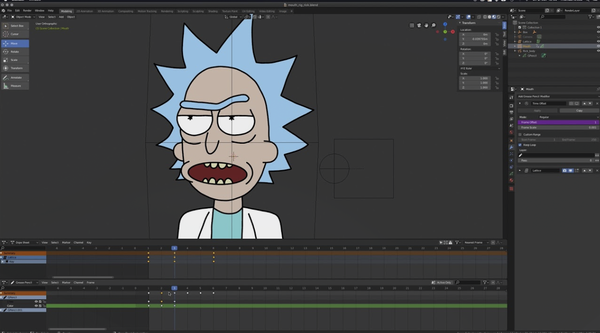
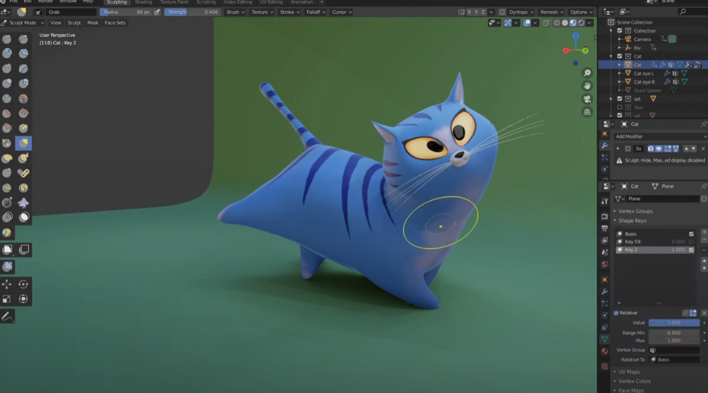
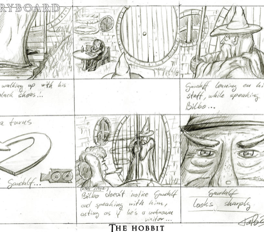
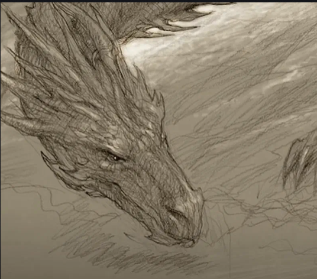
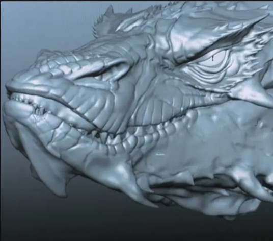

Компьютерная графика и анимация в кино. Разработка и наложение эффектов
Кабисова К. ИУЗ-31М
Содержание
Введение
Что такое VFX
Виды визуальных эффектов в фильме
Что такое CGI-графика
Инструменты и программное обеспечение
Композиция и зеленый экран VFX
Что такое и как работает Motion Capture
Заключение
Введение
Компьютерная анимация - процесс создания анимированных изображений с помощью компьютерной графики.

2D анимация

3D анимация
Что такое VFX. Определение термина.
Визуальные эффекты (VFX) - это термин, используемый для описания изображений, созданных или улучшенных для любого фильма
Виды визуальных эффектов в фильме
- CGI -
- Композитинг -
- Захват движения -
Что такое CGI-графика
CGI (от англ. Computer-Generated Imagery) — это изображения, сгенерированные с помощью компьютера. К CGI относят трёхмерную и двумерную компьютерную графику, с помощью которой создают персонажей, сцены и спецэффекты в фильмах, на телевидении, в рекламе и в играх.
Этапы создания CGI

Сценарий и раскадровка

Подбор референсов

Разработка дизайна персонажей
Искусство композитинга определяется объединением нескольких изображений в одно изображение
Одним из примеров этого может быть использование двойной экспозиции, как в все еще удивительной начальной последовательности для True Detective.
Самым известным методом композитинга является съемка с зеленым экраном. Этот процесс называется chroma keying, сплошной цвет фона заменяется новым фоновым изображением.
Визуальные эффекты захвата движенияX
Что такое и как работает Motion Capture
Костюм с набором специальных датчиков
Средства регистрации в виде различных камер/регистраторов